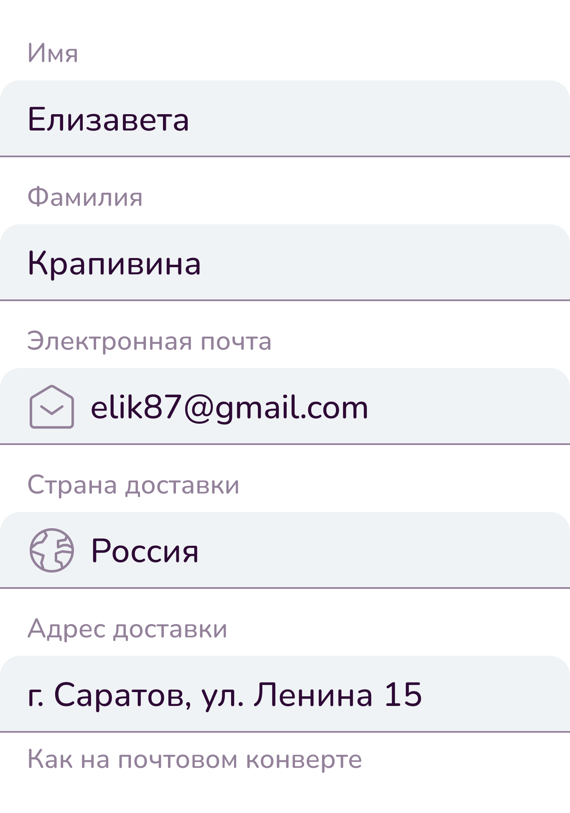

Строки ввода используются для получения строковой информации от пользователя.
В оформлении полей обратной связи используются эмоционально значимые цвета. Такие поля должны использоваться только в случае информационной необходимости и никогда для получения выгоды системой в ущерб интересам пользователя.
Нормальное состояние — это поле без обратной связи.
Заблокированное поле используется, когда в данный момент невозможно ввести информацию.
При этом в описании обязательно должна быть указана причина блокировки поля или способ его разблокировки. Как и другие заблокированные элементы, оно менее контрастно.
Ошибка используется в случае, когда введенные данные не соответствуют требованиям к ним.
В случае ошибки обязательно заполнение описания ошибки, чтобы ясно было, как её исправлять. Рядом с описанием обязательно использовать иконку для того, чтобы состояние ошибки было показано не только цветом.
Исключение составляют неверно введенные логин и пароль: даже если есть ошибка форматирования, необходимо выводить ошибку «Неверный логин или пароль» (дословно) для избежания компрометирования личных данных.

Предупреждение — это совет. Оно используется в случае, когда введенные пользователем данные корректны, но исправление может улучшить опыт пользователя.
В случае предупреждения также обязательно заполнение описания предупреждения, желательно так, чтобы ясно было, как его исправлять. Рядом с описанием обязательно использовать иконку для того, чтобы состояние ошибки было показано не только цветом.

Успех используется в случае заполнения полей со сложными правилами для того, чтобы показать, что все правила соблюдены.
Верный логин и пароль (в процессе входа в уже существующий аккаунт) никогда не должны иметь состояние Успех. Совпадающие пароли или надежный пароль во время регистрации могут иметь состояние Успех.
Привычно, граница четко определяет поле.

Визуально легче и компактнее.
Руководствуйтесь эстетическими соображениями и количеством полей в форме.
Полей 5 и больше? Лучше использовать подчеркнутые поля, они визуально более легкие.

Полей меньше 5? Лучше использовать контурные поля, они более заметные и привычные..
Можно использовать оба вида стилей в одной форме, но тогда необходим блоковый подход: поля двух разных стилей не должны быть перемешаны, но использованы каждый в своих ясно отделенных блоках.
. Смысловые блоки
. Чередование
Ширина подбирается вручную. При этом рекомендуется учитывать в порядке приоритета:
Неконтрастный текст с примером заполнения поля. Используется для полей, в которых могут возникнуть сомнения в заполнении после прочтения названия.

Пример должен явно отличаться от автозаполнения, которое возможно в поле.

Цифры или буквы в порядке увеличения от 1 или A

Общепринятые названия (экземплификанты)
Не соответствует принятому стилю речи.